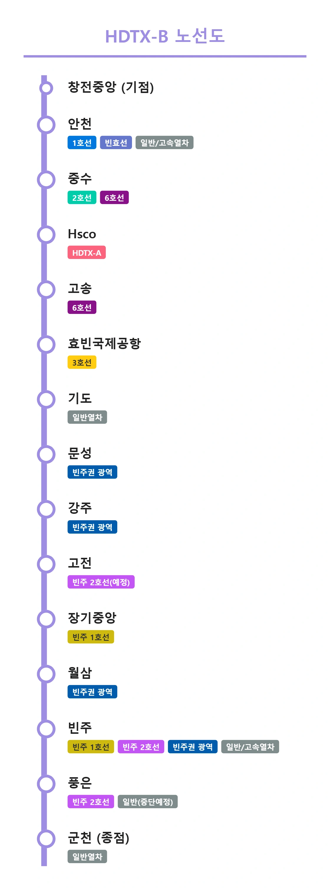

HDTX-B
|
|||
|
 HDTX-B 노선도 (예정안)
|
|||
| 노선 정보 | |||
|---|---|---|---|
| 노선 색상 | ■ 연보라색 (#9d8de2) | ||
| 운영 기관 | 에이치디티엑스운영 (예정) | ||
| 상태 | 계획 중 | ||
| 개통 예정 | 미정 | ||
| 기점 | 창전중앙역 | ||
| 종점 | 군천역 | ||
| 역 수 | 15개 | ||
| 시스템 | 광역급행철도 | ||
| 차량 | 중형 중전철 (고속형) | ||

1. 개요
"기존 철도로 부족했던 효빈-군천 구간을 단번에 이어줄 광역급행망"
현재 야심 차게 계획 중인 덕빈권 광역급행철도 노선이다. 정식 명칭은 HDTX-B (Hyobin-Deokbin Train eXpress B).
효빈광역시 남부 외곽 지역인 창전중앙역에서 출발해 철도 음영지역이었던 안천, 중수, 북구를 시원한 대심도로 관통한 뒤, 덕빈북도의 핵심 거점인 기도, 강주, 빈주시를 지나 최종적으로 신산업과 인구가 팽창 중인 군천시까지 일직선으로 잇는 초광역 메가 교통 프로젝트다. 먼저 발표된 HDTX-A선과 교차하며 효빈-덕빈 권역을 하나로 묶는 X자 광역교통축을 완성하는 매우 막중한 역할을 맡게 된다.
2. 특징
2.1. A노선에 이은 거대 프로젝트
이미 일반 열차와 기존 광역전철(상빈선, 강빈선 등)이 어느 정도 효빈-군천 축을 부분적으로 커버하고 있기 때문에, 완전히 새로운 축을 뚫어내는 신설 노선인 HDTX-A선에 비해서는 사업 우선순위가 약간 밀려있는 상태다.
하지만 1983년 시 승격 이후 각종 산업단지와 신도시 개발로 인구가 폭발적으로 성장한 군천시와, 명실상부한 도청 소재지 빈주시에서 매일 아침 효빈광역시로 향하는 출퇴근 수요가 이미 임계점을 넘어섰다. 기존 철도망의 느린 표정속도와 떨어지는 수송력의 한계를 극복하기 위해 HDTX-B는 매우 시급하고 중요한 대동맥으로 꼽히고 있다. B노선이 개통되면 효빈과 군천 사이의 통근 시간이 혁신적으로 단축되어, 사실상 완벽한 단일 메가시티 생활권으로 묶이게 된다.
2.2. 강빈선 광역철도 계획과의 간섭 및 백지화 떡밥
B노선 사업의 가장 큰 변수는 기존에 추진 중이던 강빈선 광역철도 계획과의 심각한 중복 문제다. HDTX-B 노선의 덕북권 간선 구간(기도~강주~빈주~군천)이 기존 강빈선의 예정된 선형 및 역 위치와 사실상 100% 겹치기 때문이다.
따라서 만약 이 HDTX-B 계획이 최종적으로 예비타당성조사(예타)를 통과하여 국책 사업으로 확정될 경우, 막대한 혈세가 투입되는 중복 투자를 피하기 위해 기존 '강빈선 광역철도' 사업은 사실상 전면 백지화되거나 완전히 다른 셔틀 지선망 형태로 전면 수정될 가능성이 99.9%라는 것이 철도 및 행정 전문가들의 중론이다.[1]
당연히 당사자인 군천·빈주 지역 주민들은 "기왕 지을 거면 속도도 느리고 찔끔찔끔 짓는 광역전철 말고, 화끈하게 지하 40m 대심도로 뚫어서 시속 180km로 쏘는 HDTX-B로 밀어붙이자"며 열렬히 환영하는 분위기다.
3. 역 목록


3.1. 효빈 도심 구간 (지하 대심도)
| 역번호 | 역명 | 로마자 역명 | 한자 역명 | 승강장 형태 | 위치 | 환승 노선 | 주소 |
|---|---|---|---|---|---|---|---|
| HD101 | 창전중앙 | Changjeon jungang | 倉田中央 | 상대식(■││■) | 지하 5층 | - | 효빈광역시 창전구 창전동 |
| HD102 | 안천 | Ancheon | 安川 | 상대식(■││■) | 지하 5층 |
일반열차
고속열차
|
효빈광역시 안천구 안천동 1031 |
| HD103 | 중수 | Jungsu | 中須 | 쌍섬식(│■││■│) | 지하 7층 |
|
효빈광역시 북구 중수동 1-23 지하 |
| HD104 | Hsco | HSCO | 孝彬展示場 | 상대식(■││■) | 지하 5층 |
(예정) |
효빈광역시 북구 생곡동 239 |
| HD105 | 고송 | Gosong | 高松 | 상대식(■││■) | 지하 3층 |
|
효빈광역시 북구 고송동 11-22 지하 |
| HD106 | 효빈국제공항 | Hyobin airport | 孝彬國祭空港 | 상대식(■││■) | 지하 4층 |
|
덕빈북도 기도군 주길면 원청리 798-4 |
3.2. 덕북권 간선 구간 (강빈선·상빈선 선로 공용)
| 역번호 | 역명 | 로마자 역명 | 한자 역명 | 승강장 형태 | 위치 | 환승 노선 | 주소 |
|---|---|---|---|---|---|---|---|
| ⬇ 강빈선 (빈주광역선 공용) 구간 ⬇ | |||||||
| HD107 | 기도 | Gido | 気島 | 상대식(■││■) | 지하 3층 | 일반열차 | 덕빈북도 기도군 기도읍 관서리 314 |
| HD108 | 문성 | Munseong | 文城 | 상대식(■││■) | 지하 2층 |
|
덕빈북도 강주시 문성동 147 |
| HD109 | 강주 | Gangju | 江州 | 상대식(■││■) | 지하 2층 |
|
덕빈북도 강주시 과탐동 239 |
| HD110 | 고전 | Gojeon | 高田 | 상대식(■││■) | 지하 2층 |
(예정) |
덕빈북도 빈주시 빈성구 고전면 중성리 |
| HD111 | 장기중앙 | Janggijungang | 長崎中央 | 상대식(■││■) | 지하 1층 |
|
덕빈북도 빈주시 장기구 장기동 |
| HD112 | 월삼 | Wolsam | 月森 | 상대식(■││■) | 지상 1층 |
|
덕빈북도 빈주시 장기구 월삼동 939 |
| ⬇ 상빈선 구간 ⬇ | |||||||
| HD113 | 빈주 | Binju | 彬州 | 상대식(■││■) | 지상 1층 |
일반열차
고속열차
|
덕빈북도 빈주시 빈성구 늑골동 12 |
| HD114 | 풍은 | Pungeun | 豊恩 | 상대식(■││■) | 지상 1층 |
일반열차
(중단예정)
|
덕빈북도 빈주시 가원구 풍은동 633 |
| HD115 | 군천 | Guncheon | 郡川 | 쌍섬식(│■││■│) | 지상 1층 | 일반열차 | 덕빈북도 군천시 군천동 석택동 281 |
4. 여담 및 밈(Meme)
"군천시에 안양사리(安養寺里)를 세우고, HDTX-B를 히메 전용 익스프레스로 선포하라!"
4.1. 안요지 히메 헌정 노선 논란과 미라쿠라파크!
HDTX-B선의 공식 노선 색상인 연보라색(#9d8de2)은 놀랍게도 2024년에 데뷔한 프로젝트 하스노소라 여학원 스쿨 아이돌 클럽 소속 104기생 유닛인 미라쿠라파크!의 멤버, 안요지 히메(安養寺ひめ)의 공식 퍼스널 컬러(슈가 퍼플) 헥사코드와 단 1픽셀의 오차도 없이 100% 완벽하게 일치한다.[2]
앞서 발표된 HDTX-A선이 사쿠라우치 리코의 색상(#FB637E)을 빼다 박은 것도 모자라, B선마저 '안요지 히메'의 컬러를 배정받자 철도 동호인들과 서브컬처 덕후들 사이에서는 "이 노선도 럽라 캐스팅을 대놓고 노린 거냐", "효빈광역시 수뇌부 기획실 내부에 중증 럽폭도가 암약하고 있다는 사실이 200% 증명되었다"는 우스갯소리가 기정사실로 굳어지고 있다.
심지어 일부 네티즌들은 "나중에 열차가 지하 터널로 역에 진입할 때 접근 멜로디로 히메 특유의 웃음소리(흐흐흥~!)나 미라쿠라파크!의 곡이 나오는 것 아니냐", "차량 시트 색상도 핑크색(루리노)과 연보라색(히메) 조합으로 뽑을 것이 분명하다"며 이 노선을 아예 '미라쿠라파크! 호차'라고 부르기 시작했다. 물론 관할 지자체와 교통공사 측은 공식적으로 "효빈광역시의 세련된 첨단 도시 이미지와 군천시를 향한 부드러운 연결을 상징하는 색"이라고 그럴싸하게 땀을 뻘뻘 흘리며 둘러댔으나, 이미 전적이 너무 화려한 탓에 이 해명을 곧이곧대로 믿는 시민은 전국에 단 한 명도 없다.
4.2. 군천시의 '희아리'와 '안양사리' 밈 폭발
이러한 상황 속에서, 이 노선이 최종적으로 종착하는 군천시의 지역 커뮤니티와 철도 갤러리 등지에서는 집단적 광기에 가까운 밈이 대폭발했다. 바로 안요지 히메의 성씨인 '안양사(安養寺)'와 군천시 외곽 을차면의 가상 지명(안양사리)을 엮은 '안양사리(安養寺里)', 그리고 군천시 을차면 희아리와 히메의 이름(姫)을 동일시한 '희아리(히메의 마을)'라는 기괴한 드립이 끝없이 재생산되고 있는 것이다.
"군천시로 가려면 반드시 HDTX-B라는 이름의 '히메 익스프레스'를 타야 한다", "이참에 군천시청을 안양사시청으로 개칭하고 행정구역을 희아리로 통합해야 한다"는 등 덕후들의 뇌절이 폭주하고 있다. 심지어 디시인사이드 러브라이브 갤러리에서는 군천역 앞 광장을 '안요지 광장'으로 부르자는 허위 조례안이나 가짜 '희아리 특산물 투어 지도'를 고퀄리티로 합성해 유포하는 등 시 당국을 아찔하게 만들고 있다.
4.3. 희아복지재단의 천문학적 배후 자본설
여기에 더해, 안요지 히메와 관련된 핵심 백그라운드 설정 중 하나인 희아복지재단(히메의 본가로 추정되는 거대 하이테크 자본)이 HDTX-B 노선 건설 사업의 민간 투자 컨소시엄에 천문학적인 자본을 대고 있다는 그럴싸한 음모론까지 돌기 시작했다.
단순히 지분을 담그는 수준을 넘어, 아예 종점인 군천역과 빈주역 일대의 역세권 개발 사업(일명 '미라쿠라 복합환승센터')의 핵심 투자자로 참여하여 지하 50m 대심도 터널 굴착 비용의 상당수를 충당하고 있다는 찌라시가 퍼졌다. 팬들은 "철도 개통과 동시에 군천시 일대에 어마어마한 규모의 덕후 전용 테마파크와 E-스포츠 복지 시설이 들어설 것"이라며 행복회로를 극한까지 불태우고 있다.
4.4. 혐덕 단체의 반발과 자비 없는 무간지옥급 행정철퇴 예고
당연하게도 이러한 서브컬처적 설레발과 드립이 시정(市政) 전반을 뒤덮을 정도로 과열되자, 평소 틈만 나면 딴지를 거는 일부 혐덕(반 서브컬처) 성향의 이익 집단과 극성 민원인들이 "시민들의 피 같은 혈세 수십조 원이 들어가는 광역 국책사업을 일개 일본 버튜버 캐릭터 색깔로 칠하고 희롱하는 게 말이 되냐"며 시청 앞 트랙터 시위와 물리적 농성, 감사원 고발을 기획할 조짐을 보였다.
그러나 과거부터 덕업일치의 끝판왕이자 자신 앞을 가로막는 자는 가차 없이 밀어버리는 불도저 같은 추진력을 가진 박효빈(1996) 시장이 이들을 가만히 놔둘 리 만무하다. 이미 시청 내부망에서는 "만약 혐덕 단체가 선을 넘어 물리적 시위나 공사 방해를 강행할 경우, 시 차원에서 피도 눈물도 없는 무자비한 행정적·법적 철퇴(징벌적 손해배상 청구 및 무기한 영업정지)를 즉각 투하하라"는 비공식 지시가 하달되었다는 흉흉한 소문이 파다하다.
특히 철덕과 네티즌들 사이에서는 "시위 주동자들은 즉시 효빈경찰청에 연행된 후, 최루탄 대신 '미라쿠라파크! 라이브 영상'을 120dB로 무한 재생하는 이른바 '음향 물리치료'를 받게 될 것", "구속 기소된 뒤에는 백지화된 강빈선 폐선로 노역장이나 HDTX 지하 70m 대심도 터널 굴착기(TBM) 톱니바퀴 청소부로 평생 무급 파견되어 끔찍한 죗값을 치르게 될 것"이라는 자비 없는 괴담이 정설처럼 굳어지며 반대 세력을 공포에 떨게 만들고 있다. 감히 시장님의 원대한 덕업일치 마스터플랜에 반기를 든 자들에게 내일이란 없다